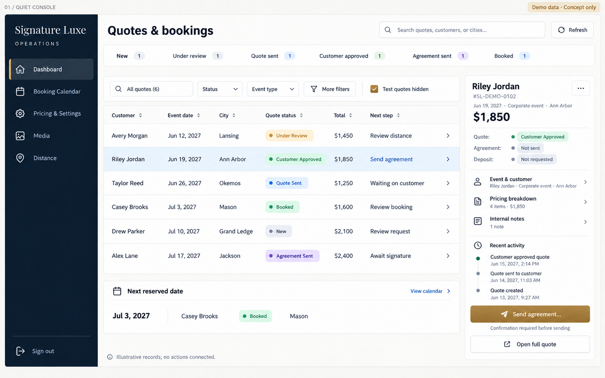
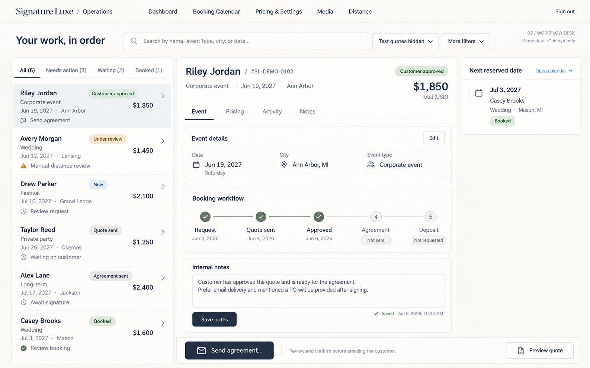
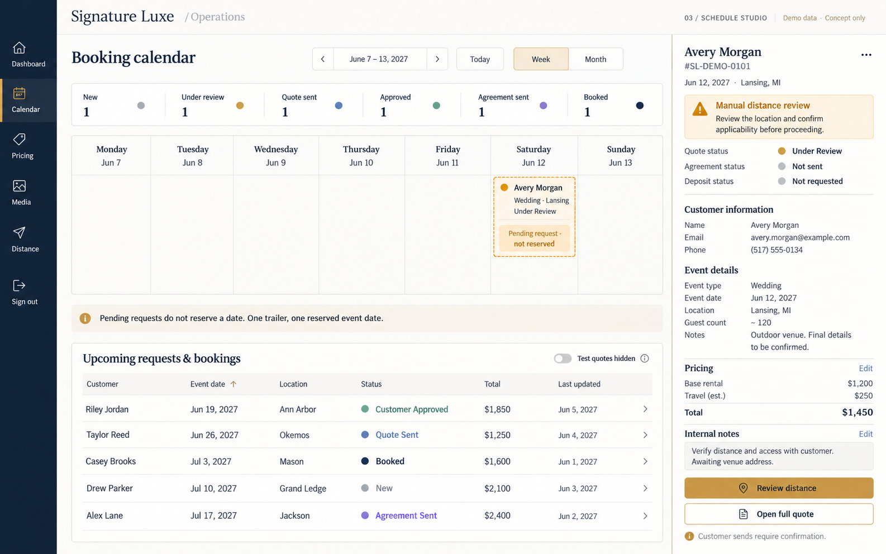
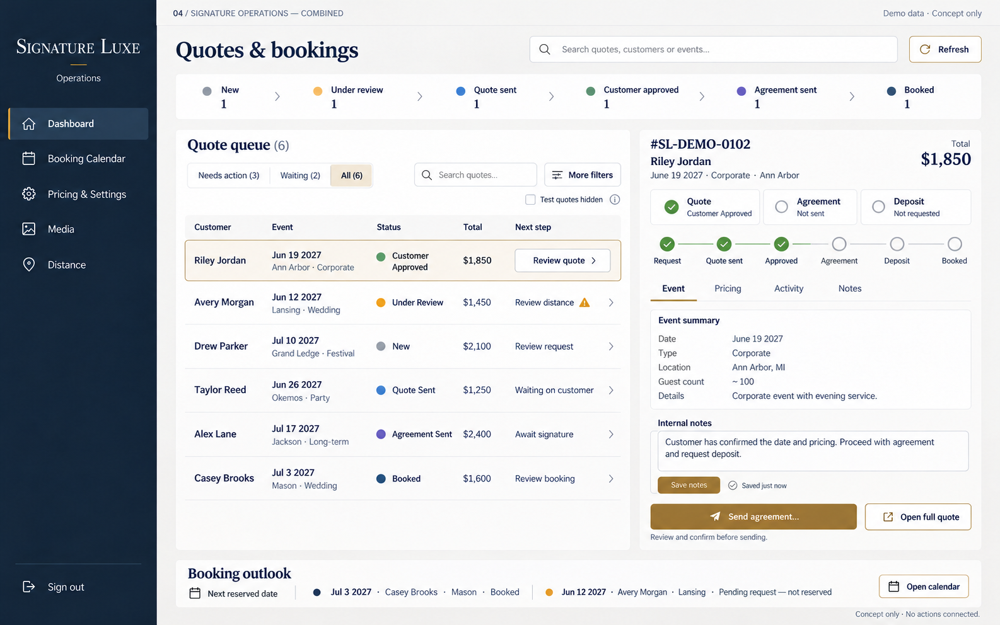

1. Quiet Console
Open full-size mockup
Best for scanning. A compact quote table, persistent navigation, and a narrow record inspector put more inquiries in view.
Tradeoff: complex quote editing still needs the full record workspace.

2. Workflow Desk
Open full-size mockup
Best for working one quote. A task list sits beside a larger quote workspace, with a small booking reminder.
Tradeoff: fewer records fit at once, and editing needs careful unsaved-change handling.

3. Schedule Studio
Open full-size mockup
Best for date planning. A day-based schedule distinguishes pending requests from reserved dates while keeping quote context nearby.
Tradeoff: the calendar can dominate when quote triage is the main task. Strong fit for the dedicated Calendar screen.

Recommended direction
4. Signature Operations

The combined approach. Navigation and compact counts from 1, focused quote work from 2, and booking awareness from 3.
Why this one: the quote queue stays visible, the next action has context, and the calendar supports the work without pushing it down the page.
